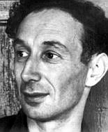
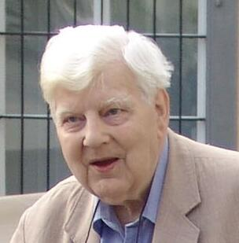
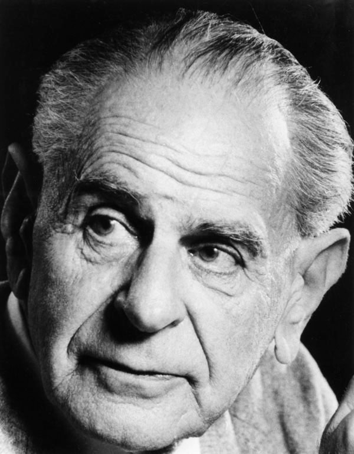
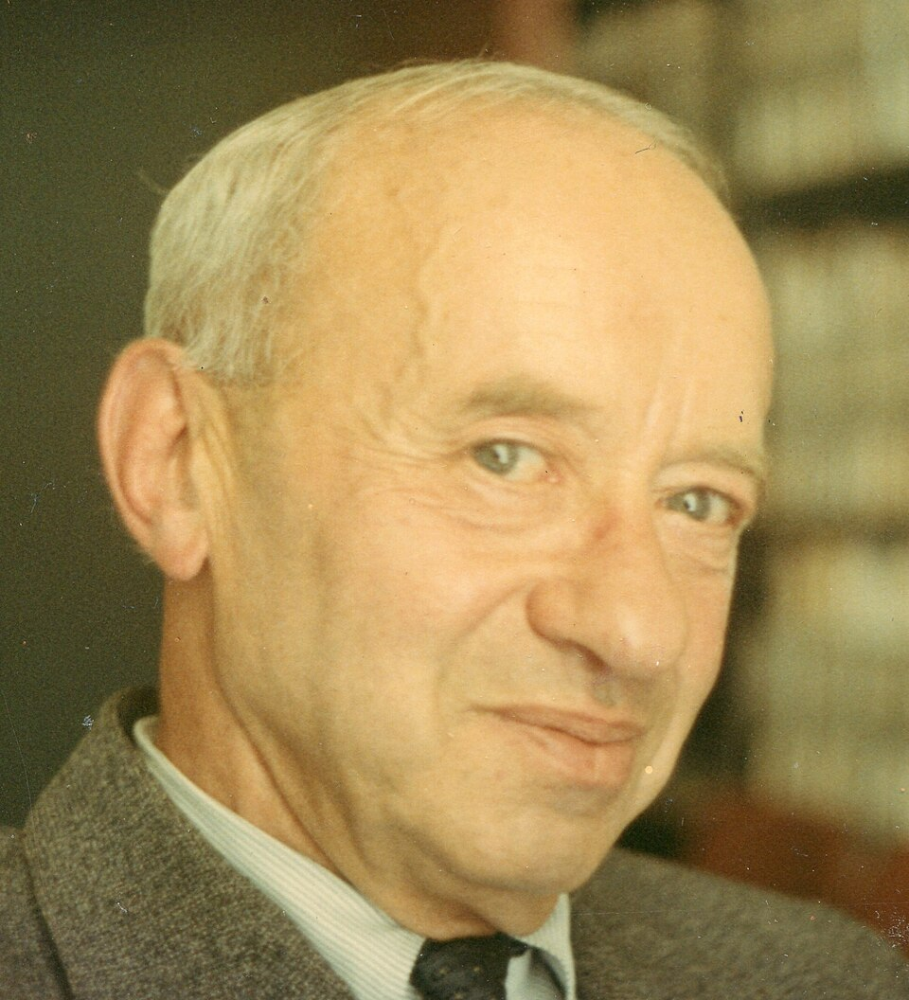

一个危险的问题
世界
“地球绕太阳转”为什么是真的？
语言
“是真的”在句子中承担什么功能？
逻辑
是否存在不可证明的真命题？
区分真理与下面的概念：
信念
我是否相信它？这是心理状态的描述。
证明
我是否能推出它？这是形式系统中的可导出关系。
共识
大家是否同意它？这是社会接受或群体偏好。
真理
事情是否如句子所说？这是语言、世界与语义评价的关系。
在日常语言中，真理与相信、证明、共识相关连甚至混用；但在哲学分析中，这些概念要分开。
古典起点：符合论
说存在者存在、非存在者不存在，即为真。
符合论保留了一个强直觉：真理要求语言受到现实约束。
句子为真 ⇔ 它符合事实
“雪是白的”为真 ⇔ （在事实上）雪是白的

符合论的困难
句子
“雪是白的”
世界
事实、对象、结构
事实问题
事实是世界中的对象、事件，还是命题结构？否定性存在句和虚构句的核查存在挑战。
对应问题
句子与事实没有字面相似性；“匹配”需要语义机制解释。
抽象问题
数学真理、逻辑真理、模态真理没有直接的经验事实对应。
弗雷格：句子的意义、思想与真值
弗雷格把句子放进一个更精细的语义结构：
- Sinn：句子的意义，表达一个思想。
- Bedeutung：句子的所指，在完整陈述句中是一个真值。
精确表述：句子表达思想，完整陈述句的所指是真值，即真或假。真由此进入现代语义学的中心。

逻辑经验主义：意义、真理与验证
验证原则
维也纳小组 的经典思路：一个综合判断有意义，当且仅当它在原则上可被经验检验。
这一路线把“真理”与可确认性、可检验性、科学方法紧密绑定。
达米特的反实在论推进
达米特：一个命题是真的，当且仅当在原则上存在对其可识别、可证明、可确立的方法。
p is true ⇔ p is in principle establishable
卡尔纳普
石里克

Ayer艾耶尔

Dummett达米特
验证主义的价值与挑战
价值
- 把意义和真与检验方法相连，拒斥形而上学。
- 为科学语言、观察语句、理论语句之间的关系提供分析框架——转向语言哲学。
挑战
- 蒯因：分析/综合二分和还原论都承受压力。
- 费奇：若所有真理原则上可知，似乎会推出所有真理实际上已知。
- 波普尔：科学理论的关键常常在可证伪性，而非可验证性。
蒯因
费奇

Popper波普尔
二十世纪转折：语义悖论
说谎者句子
L：这个句子不是真的。
若 L 真，则它不真；若 L 不真，它又似乎为真。
自我指涉性的句子容易引起悖论。
1. “真”具有特殊语义地位；无约束的真谓词会制造自指爆炸。
2. 自然语言能谈论自身，这让语义概念带有系统性风险。
3. 塔斯基由此引入对象语言/元语言区分，现代语义学获得安全结构。
塔斯基革命：对象语言与元语言
塔斯基的基本策略：
- 对象语言：被讨论、被解释的语言。
- 元语言：给出“满足”“真”等语义概念的语言。
- 层级限制：对象语言通常不能安全地包含自身的真谓词。
True(⌜p⌝) ↔ p
“雪是白的”为真 ↔ 雪是白的

T-SCHEME 与算术真不可定义性
T-schema：一个合格真理定义的检验式
True(⌜p⌝) ↔ p
它是一条模式：每个对象语言句子都应生成一个正确的 T-句子。
True(⌜Snow is white⌝) ↔ Snow is white
不可定义性：算术真理超出算术内部
若一阶算术能在自身内部定义“算术真”，就会重演说谎者式的对角化。
No arithmetical predicate Tr(x) defines all arithmetical truth.
真理需要更强的元语言；这也是“真”与“可证明性”分离的深层背景。
紧缩论 / 冗余论 / 最小主义
核心直觉
说“p 是真的”，通常不添加新的事实结构；它让我们能够赞同、概括、转述和无限合取。
It is true that p ↔ p
“雪是白的是真的” ≈ “雪是白的”
紧缩论：哲学解释
紧缩论进一步主张：“真”没有厚重的对应性质；它的主要作用在语言与逻辑操作中。
Truth is a logical device for endorsement and generalization.
融贯论：真理来自整体系统
融贯论：命题的真理地位来自它在整体信念系统中的位置。
- 与其他信念一致；
- 能解释更多经验；
- 在推理网络中获得相互支持；
- 系统能抵抗局部反例并进行自我修正。
符合论强调“句子—世界”的垂直关系；融贯论强调“信念—信念”的网络关系。
真理论传统
Joachim、Blanshard 把真理放在整体系统中理解，带有黑格尔主义遗产。
当代系统化
Rescher 尝试把融贯理解成理想化的系统一致、解释力与整合度。
认识论关联
BonJour、Davidson 更常进入“证成/知识”的讨论；可作为融贯论当代延伸。
融贯论的强处
整体性
很多判断无法孤立检验，需要放在理论整体中评估。科学理论尤其如此。
解释力
好理论组织经验、统一现象，并让不同证据相互支持。
修正性
局部信念可以被整体系统调整；知识具有网络结构。
融贯论的压力
封闭系统问题
一个小说世界、梦境或阴谋论体系，也可以做到内部融贯。
多体系问题
两个互相冲突的系统可能各自融贯。真理还需要世界对系统的外部约束。
融贯性是理性评价的重要条件，却很难独自承担“真”的全部重量。
五种回答总结
| 理论 | 真理是什么？ | 优点 | 困难 |
|---|---|---|---|
| 符合论 | 句子与事实/世界相符合 | 保留现实约束 | 对应关系难解释 |
| 验证主义 | 原则上可检验、可证明、可确立 | 连接意义、证成与科学方法 | 自我适用、费奇悖论、波普尔与蒯因式批评 |
| 塔斯基语义 | 元语言中的真定义；满足关系；T-schema | 精确、可形式化，回应语义悖论 | 哲学本体论含义有限 |
| 紧缩论 | “真”的逻辑与表达功能 | 去神秘化，解释概括与赞同 | 真理的规范性与现实约束仍待说明 |
| 融贯论 | 系统内部一致、解释、相互支持 | 强调整体性与理论网络 | 融贯不等于真实 |
结论：真理不能只靠一个口号
形式语言中的真理需要语义精度，
自然语言中的真理具有规范力量，
科学与知识实践中的真理保留现实约束。
Truth = semantic precision + normative force + worldly constraint
备用：真理理论谱系
真理理论
├── 实质理论：符合论、融贯论、实用主义
├── 认识论/反实在论路线：验证主义、可证成性、达米特
├── 语义理论：塔斯基真理定义、满足关系、不可定义性
└── 非实质理论：紧缩论、冗余论、去引号论、最小主义